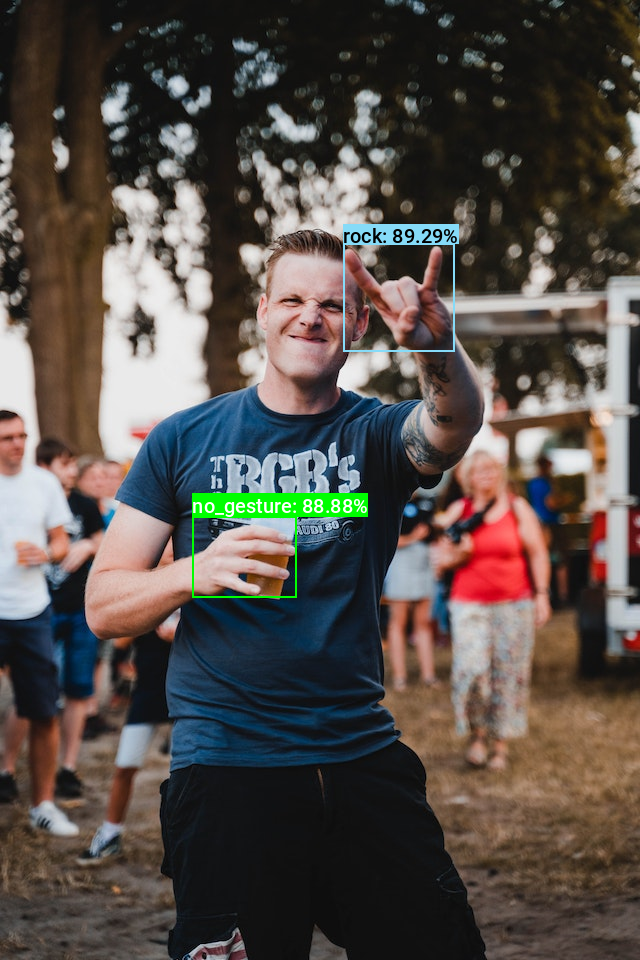

Quantizing YOLOX with ONNX Runtime and TensorRT in Ubuntu
- Introduction
- Quantization Process
- Getting Started with the Code
- Setting Up Your Python Environment
- Importing the Required Dependencies
- Setting Up the Project
- Loading the Checkpoint Data
- Loading the Dataset
- Collecting Calibration Data
- Performing Inference with TensorRT
- Conclusion
Introduction
Welcome back to this series on real-time object detection with YOLOX. Previously, we fine-tuned a YOLOX model in PyTorch to detect hand signs and exported it to ONNX. This tutorial covers quantizing our ONNX model and performing int8 inference using ONNX Runtime and TensorRT.
Quantization aims to make inference more computationally and memory efficient using a lower precision data type (e.g., 8-bit integer (int8)) for the model weights and activations. Modern devices increasingly have specialized hardware for running models at these lower precisions for improved performance.
ONNX Runtime includes tools to assist with quantizing our model from its original float32 precision to int8. ONNX Runtime’s execution providers also make it easier to leverage the hardware-specific inference libraries used to run models on the specialized hardware. In this tutorial, we will use the TensorRT Execution Provider to perform int8-precision inference.
TensorRT is a high-performance inference library for NVIDIA hardware. For our purposes it allows us to run our YOLOX model at 16-bit and 8-bit precision, while leveraging the specialized tensor cores in modern NVIDIA devices.
TensorRT requires NVIDIA hardware with CUDA Compute Capability 7.0 or higher (e.g., RTX 20-series or newer). Check the Compute Capability tables at the link below for your Nvidia hardware:
You can follow along using the free GPU-tier of Google Colab if you do not have any supported hardware.
Quantization Process
Quantizing our model involves converting the original 32-bit floating point values to 8-bit integers. float32 precision allows for a significantly greater range of possible values versus int8. To find the best way to map the float32 values to int8, we must compute the range of float32 values in the model.
The float32 values for the model weights are static, while the activation values depend on the input fed to the model. We can calculate a suitable range of activation values by feeding sample inputs through the model and recording the activations. TensorRT can then use this information when quantizing the model. We will use a subset of images from the original training dataset to generate this calibration data.
Getting Started with the Code
As with the previous tutorial, the code is available as a Jupyter Notebook.
| Jupyter Notebook | Google Colab |
|---|---|
| GitHub Repository | Open In Colab |
Setting Up Your Python Environment
First, we must add a few new libraries to our Python environment.
Install CUDA Package
Both ONNX Runtime and TensorRT require CUDA for use with NVIDIA GPUs and support CUDA 12.x.
We can view the available CUDA package versions using the following command:
conda search cuda -c nvidia/label/cuda-*Loading channels: done
# Name Version Build Channel
cuda 12.0.0 h7428d3b_0 conda-forge
cuda 12.0.0 h7428d3b_1 conda-forge
cuda 12.0.0 ha770c72_0 conda-forge
cuda 12.0.0 ha804496_0 conda-forge
cuda 12.0.0 ha804496_1 conda-forge
cuda 12.1.1 h7428d3b_0 conda-forge
cuda 12.1.1 ha804496_0 conda-forge
cuda 12.2.2 h7428d3b_0 conda-forge
cuda 12.2.2 ha804496_0 conda-forge
cuda 12.3.2 h7428d3b_0 conda-forge
cuda 12.3.2 ha804496_0 conda-forge
cuda 12.4.0 h7428d3b_0 conda-forge
cuda 12.4.0 ha804496_0 conda-forge
cuda 12.4.1 h7428d3b_0 conda-forge
cuda 12.4.1 ha804496_0 conda-forge
cuda 12.5.0 h7428d3b_0 conda-forge
cuda 12.5.0 ha804496_0 conda-forge
cuda 12.5.1 h7428d3b_0 conda-forge
cuda 12.5.1 ha804496_0 conda-forge
cuda 12.6.0 h7428d3b_0 conda-forge
cuda 12.6.0 ha804496_0 conda-forge
cuda 12.6.1 h7428d3b_0 conda-forge
cuda 12.6.1 ha804496_0 conda-forge
cuda 12.6.2 h7428d3b_0 conda-forge
cuda 12.6.2 ha804496_0 conda-forgeRun the following command to install CUDA in our Python environment with Conda/Mamba.
conda install cuda -c nvidia/label/cuda-12.4.0 -ymamba install cuda -c nvidia/label/cuda-12.4.0 -yInstall ONNX Runtime and TensorRT
The only additional libraries we need are ONNX Runtime with GPU support and TensorRT, assuming the packages used in the previous two tutorials are already in the Python environment. At the time of writing, ONNX Runtime supports TensorRT 10.x.
Run the following commands to install the libraries:
# Install TensorRT packages
pip install -U tensorrt
# Install ONNX Runtime for CUDA 12
pip install -U 'onnxruntime-gpu==1.20.0'With our environment updated, we can dive into the code.
Importing the Required Dependencies
First, we will import the necessary Python dependencies into our Jupyter Notebook. The ONNX Runtime package does not know where to look for the cuDNN libraries included with the cuda package, so we load those first using the following approach adapted from the tensorrt package.
# Load cuDNN libraries
import ctypes
import glob
import os
import sys
from nvidia import cudnn
def try_load(library):
try:
ctypes.CDLL(library, mode=ctypes.RTLD_GLOBAL) # Use RTLD_GLOBAL to make symbols available
except OSError:
pass
def try_load_libs_from_dir(path):
# Load all .so files (Linux)
for lib in glob.iglob(os.path.join(path, "*.so*")):
try_load(lib)
# Load all .dll files (Windows)
for lib in glob.iglob(os.path.join(path, "*.dll*")):
try_load(lib)
# Get the cudnn library path
CUDNN_LIB_DIR = os.path.join(cudnn.__path__[0], "lib")
# Try loading all libraries in the cudnn lib directory
try_load_libs_from_dir(CUDNN_LIB_DIR)# Import Python Standard Library dependencies
import json
import os
from pathlib import Path
import random
# Import utility functions
from cjm_psl_utils.core import download_file, file_extract
from cjm_pil_utils.core import resize_img, get_img_files
from cjm_pil_utils.annotation import draw_bboxes
# Import numpy
import numpy as np
# Import the pandas package
import pandas as pd
# Do not truncate the contents of cells and display all rows and columns
pd.set_option('max_colwidth', None, 'display.max_rows', None, 'display.max_columns', None)
# Import PIL for image manipulation
from PIL import Image
# Import tensorrt_libs
import tensorrt_libs
# Import ONNX dependencies
import onnxruntime as ort # Import the ONNX Runtime
from onnxruntime.tools.symbolic_shape_infer import SymbolicShapeInference
from onnxruntime.quantization import CalibrationDataReader, CalibrationMethod, create_calibrator, write_calibration_table
# Import tqdm for progress bar
from tqdm.auto import tqdmMake sure to import the tensorrt_libs module that is part of the tensorrt pip package. Otherwise, you will need to update the LD_LIBRARY_PATH environment variable with the path to the TensorRT library files.
Setting Up the Project
Next, we will set the folder locations for our project, the calibration dataset, and the directory with the ONNX model and JSON colormap file. We should also ensure we have a font file for annotating images.
Setting the Directory Paths
Readers following the tutorial on their local machine should select locations with read and write access to store the archived and extracted dataset. For a cloud service like Google Colab, you can set it to the current directory.
# The name for the project
project_name = f"pytorch-yolox-object-detector"
# The path for the project folder
project_dir = Path(f"./{project_name}/")
# Create the project directory if it does not already exist
project_dir.mkdir(parents=True, exist_ok=True)
# Define path to store datasets
dataset_dir = Path("/mnt/Storage/Datasets/")
# Create the dataset directory if it does not exist
dataset_dir.mkdir(parents=True, exist_ok=True)
# Define path to store archive files
archive_dir = dataset_dir/'../Archive'
# Create the archive directory if it does not exist
archive_dir.mkdir(parents=True, exist_ok=True)
# The path to the checkpoint folder
checkpoint_dir = Path(project_dir/f"2024-02-17_11-08-46")
pd.Series({
"Project Directory:": project_dir,
"Dataset Directory:": dataset_dir,
"Archive Directory:": archive_dir,
"Checkpoint Directory:": checkpoint_dir,
}).to_frame().style.hide(axis='columns')| Project Directory: | pytorch-yolox-object-detector |
|---|---|
| Dataset Directory: | /mnt/Storage/Datasets |
| Archive Directory: | /mnt/Storage/Datasets/../Archive |
| Checkpoint Directory: | pytorch-yolox-object-detector/2024-02-17_11-08-46 |
Download a Font File
# Set the name of the font file
font_file = 'KFOlCnqEu92Fr1MmEU9vAw.ttf'
# Download the font file
download_file(f"https://fonts.gstatic.com/s/roboto/v30/{font_file}", "./")Loading the Checkpoint Data
Now, we can load the colormap, set the path for the ONNX model, and set the max stride value.
Load the Colormap
# The colormap path
colormap_path = list(checkpoint_dir.glob('*colormap.json'))[0]
# Load the JSON colormap data
with open(colormap_path, 'r') as file:
colormap_json = json.load(file)
# Convert the JSON data to a dictionary
colormap_dict = {item['label']: item['color'] for item in colormap_json['items']}
# Extract the class names from the colormap
class_names = list(colormap_dict.keys())
# Make a copy of the colormap in integer format
int_colors = [tuple(int(c*255) for c in color) for color in colormap_dict.values()]Set Model Checkpoint Information
# The onnx model path
onnx_file_path = list(checkpoint_dir.glob('*.onnx'))[0]
# Set max stride value for processing output
max_stride = 32Loading the Dataset
Now that we set up the project, we can download our dataset and select a subset to use for calibration.
Setting the Dataset Path
We first need to construct the name for the Hugging Face Hub dataset and define where to download and extract the dataset.
# Set the name of the dataset
dataset_name = 'hagrid-sample-30k-384p'
# Construct the HuggingFace Hub dataset name by combining the username and dataset name
hf_dataset = f'cj-mills/{dataset_name}'
# Create the path to the zip file that contains the dataset
archive_path = Path(f'{archive_dir}/{dataset_name}.zip')
# Create the path to the directory where the dataset will be extracted
dataset_path = Path(f'{dataset_dir}/{dataset_name}')
pd.Series({
"HuggingFace Dataset:": hf_dataset,
"Archive Path:": archive_path,
"Dataset Path:": dataset_path
}).to_frame().style.hide(axis='columns')| HuggingFace Dataset: | cj-mills/hagrid-sample-30k-384p |
|---|---|
| Archive Path: | /mnt/Storage/Datasets/../Archive/hagrid-sample-30k-384p.zip |
| Dataset Path: | /mnt/Storage/Datasets/hagrid-sample-30k-384p |
Downloading the Dataset
We can now download the dataset archive file and extract the dataset. We can delete the archive afterward to save space.
# Construct the HuggingFace Hub dataset URL
dataset_url = f"https://huggingface.co/datasets/{hf_dataset}/resolve/main/{dataset_name}.zip"
print(f"HuggingFace Dataset URL: {dataset_url}")
# Set whether to delete the archive file after extracting the dataset
delete_archive = True
# Download the dataset if not present
if dataset_path.is_dir():
print("Dataset folder already exists")
else:
print("Downloading dataset...")
download_file(dataset_url, archive_dir)
print("Extracting dataset...")
file_extract(fname=archive_path, dest=dataset_dir)
# Delete the archive if specified
if delete_archive: archive_path.unlink()Get Image File Paths
Once downloaded, we can get the paths to the images in the dataset.
# Get a list of all JPG image files in the dataset
img_file_paths = list(dataset_path.glob("./**/*.jpg"))
# Print the number of image files
print(f"Number of Images: {len(img_file_paths)}")
# Display the first five entries from the dictionary using a Pandas DataFrame
pd.DataFrame(img_file_paths).head()Number of Images: 31833| 0 | |
|---|---|
| 0 | /mnt/Storage/Datasets/hagrid-sample-30k-384p/hagrid_30k/train_val_call/00005c9c-3548-4a8f-9d0b-2dd4aff37fc9.jpg |
| 1 | /mnt/Storage/Datasets/hagrid-sample-30k-384p/hagrid_30k/train_val_call/0020a3db-82d8-47aa-8642-2715d4744db5.jpg |
| 2 | /mnt/Storage/Datasets/hagrid-sample-30k-384p/hagrid_30k/train_val_call/004ac93f-0f7c-49a4-aadc-737e0ad4273c.jpg |
| 3 | /mnt/Storage/Datasets/hagrid-sample-30k-384p/hagrid_30k/train_val_call/006cac69-d3f0-47f9-aac9-38702d038ef1.jpg |
| 4 | /mnt/Storage/Datasets/hagrid-sample-30k-384p/hagrid_30k/train_val_call/00973fac-440e-4a56-b60c-2a06d5fb155d.jpg |
Select Sample Images
Using every image in the dataset for the calibration process would be unnecessary and time-consuming, so we’ll select a random subset.
random.seed(1234) # Set random seed for consistency
sample_percentage = 0.1
sample_img_paths = random.sample(img_file_paths, int(len(img_file_paths)*sample_percentage))Try to have at least 200 samples for the calibration set if adapting this tutorial to another dataset.
Collecting Calibration Data
With the dataset samples selected, we can feed them through the model and collect the calibration data.
Implement a CalibrationDataReader
First, we will implement a CalibrationDataReader class to load and prepare samples to feed through the model.
class CalibrationDataReaderCV(CalibrationDataReader):
"""
A subclass of CalibrationDataReader specifically designed for handling
image data for calibration in computer vision tasks. This reader loads,
preprocesses, and provides images for model calibration.
"""
def __init__(self, img_file_paths, target_sz, max_stride=32, input_name='input'):
"""
Initializes a new instance of the CalibrationDataReaderCV class.
Args:
img_file_paths (list): A list of image file paths.
target_sz (tuple): The target size (width, height) to resize images to.
max_stride (int, optional): Maximum stride for ensuring input dimension compatibility. Default is 32.
input_name (str, optional): The name of the input node in the ONNX model. Default is 'input'.
"""
super().__init__() # Initialize the base class
# Initialization of instance variables
self._img_file_paths = img_file_paths
self.input_name = input_name
self.max_stride = max_stride
self.enum = iter(img_file_paths) # Create an iterator over the image paths
self.target_sz = target_sz
def get_next(self):
"""
Retrieves, processes, and returns the next image in the sequence as a NumPy array suitable for model input.
Returns:
dict: A dictionary with a single key-value pair where the key is `input_name` and the value is the
preprocessed image as a NumPy array, or None if there are no more images.
"""
img_path = next(self.enum, None) # Get the next image path
if not img_path:
return None # If there are no more paths, return None
# Load the image from the filepath and convert to RGB
image = Image.open(img_path).convert('RGB')
# Resize the image to the target size
resized_img = resize_img(image, target_sz=self.target_sz, divisor=1)
# Adjust dimensions to be multiples of max_stride
input_dims = [dim - dim % self.max_stride for dim in resized_img.size]
# Calculate offsets for cropping to maintain aspect ratio
offsets = (np.array(resized_img.size) - np.array(input_dims)) / 2
# Calculate the scale between original and resized images for potential use
min_img_scale = min(image.size) / min(resized_img.size)
max_img_scale = max(image.size) / max(resized_img.size)
# Crop the resized image based on calculated offsets to fit model input requirements
input_img = resized_img.crop(box=[*offsets, *(np.array(resized_img.size) - offsets)])
# Convert the image to a NumPy array, normalize, and add a batch dimension
input_tensor_np = np.array(input_img, dtype=np.float32).transpose((2, 0, 1))[None] / 255
# Return the image in a dictionary under the specified input name
return {self.input_name: input_tensor_np}This CalibrationDataReader class does not normalize the input as our ONNX model performs that step internally. Be sure to include any required input normalization if adapting this tutorial to another model that does not include it internally.
Specify a Cache Folder
Next, we will create a folder to store the collected calibration data and any cache files generated by TensorRT.
trt_cache_dir = checkpoint_dir/'trt_engine_cache'
trt_cache_dir.mkdir(parents=True, exist_ok=True)
trt_cache_dirPosixPath('pytorch-yolox-object-detector/2024-02-17_11-08-46/trt_engine_cache')Collect Calibration Data
Now, we can create a calibrator object and an instance of our custom CalibrationDataReader object to collect the activation values and compute the range of values. The calibrator object creates a temporary ONNX model for the calibration process that we can delete afterward.
After feeding the data samples through the model, we will save the generated calibration file for TensorRT to use later.
%%time
target_sz = 384
# Save path for temporary ONNX model used during calibration process
augmented_model_path = onnx_file_path.parent/f"{onnx_file_path.stem}-augmented.onnx"
try:
# Create a calibrator object for the ONNX model.
calibrator = create_calibrator(
model=onnx_file_path,
op_types_to_calibrate=None,
augmented_model_path=augmented_model_path,
calibrate_method=CalibrationMethod.MinMax
)
# Set the execution providers for the calibrator.
calibrator.set_execution_providers(["CUDAExecutionProvider", "CPUExecutionProvider"])
# Initialize the custom CalibrationDataReader object
calibration_data_reader = CalibrationDataReaderCV(img_file_paths=sample_img_paths,
target_sz=target_sz,
max_stride=max_stride,
input_name=calibrator.model.graph.input[0].name)
# Collect calibration data using the specified data reader.
calibrator.collect_data(data_reader=calibration_data_reader)
# Write the computed calibration table to the specified directory.
write_calibration_table(calibrator.compute_data().data, dir=str(trt_cache_dir))
except Exception as e:
# Catch any exceptions that occur during the calibration process.
print("An error occurred:", e)
finally:
# Remove temporary ONNX file created during the calibration process
if augmented_model_path.exists():
augmented_model_path.unlink()CPU times: user 1min 25s, sys: 794 ms, total: 1min 26s
Wall time: 1min 25sInspect TensorRT Cache Folder
Looking in the cache folder, we should see three new files.
# Print the content of the module folder as a Pandas DataFrame
pd.DataFrame([path.name for path in trt_cache_dir.iterdir()])| 0 | |
|---|---|
| 0 | calibration.cache |
| 1 | calibration.flatbuffers |
| 2 | calibration.json |
That takes care of the calibration process. In the next section, we will create an ONNX Runtime inference session and perform inference with TensorRT.
Performing Inference with TensorRT
To have TensorRT quantize the model for int8 inference, we need to specify the path to the cache folder and the calibration table file name and enable int8 precision when initializing the inference session.
Create an Inference Session
ort.get_available_providers()['TensorrtExecutionProvider', 'CUDAExecutionProvider', 'CPUExecutionProvider']providers = [
('TensorrtExecutionProvider', {
'device_id': 0, # The device ID
'trt_max_workspace_size': 4e9, # Maximum workspace size for TensorRT engine (1e9 ≈ 1GB)
'trt_engine_cache_enable': True, # Enable TensorRT engine caching
'trt_engine_cache_path': str(trt_cache_dir), # Path for TensorRT engine, profile files, and int8 calibration table
'trt_int8_enable': True, # Enable int8 mode in TensorRT
'trt_int8_calibration_table_name': 'calibration.flatbuffers', # int8 calibration table file for non-QDQ models in int8 mode
})
]
sess_opt = ort.SessionOptions()
# Load the model and create an InferenceSession
session = ort.InferenceSession(onnx_file_path, sess_options=sess_opt, providers=providers)Define Utility Functions
Next, we will redefine the same utility functions from the previous tutorial.
Define a function to generate the output grids
def generate_output_grids_np(height, width, strides=[8,16,32]):
"""
Generate a numpy array containing grid coordinates and strides for a given height and width.
Args:
height (int): The height of the image.
width (int): The width of the image.
Returns:
np.ndarray: A numpy array containing grid coordinates and strides.
"""
all_coordinates = []
for stride in strides:
# Calculate the grid height and width
grid_height = height // stride
grid_width = width // stride
# Generate grid coordinates
g1, g0 = np.meshgrid(np.arange(grid_height), np.arange(grid_width), indexing='ij')
# Create an array of strides
s = np.full((grid_height, grid_width), stride)
# Stack the coordinates along with the stride
coordinates = np.stack((g0.flatten(), g1.flatten(), s.flatten()), axis=-1)
# Append to the list
all_coordinates.append(coordinates)
# Concatenate all arrays in the list along the first dimension
output_grids = np.concatenate(all_coordinates, axis=0)
return output_gridsDefine a function to calculate bounding boxes and probabilities
def calculate_boxes_and_probs(model_output:np.ndarray, output_grids:np.ndarray) -> np.ndarray:
"""
Calculate the bounding boxes and their probabilities.
Parameters:
model_output (numpy.ndarray): The output of the model.
output_grids (numpy.ndarray): The output grids.
Returns:
numpy.ndarray: The array containing the bounding box coordinates, class labels, and maximum probabilities.
"""
# Calculate the bounding box coordinates
box_centroids = (model_output[..., :2] + output_grids[..., :2]) * output_grids[..., 2:]
box_sizes = np.exp(model_output[..., 2:4]) * output_grids[..., 2:]
x0, y0 = [t.squeeze(axis=2) for t in np.split(box_centroids - box_sizes / 2, 2, axis=2)]
w, h = [t.squeeze(axis=2) for t in np.split(box_sizes, 2, axis=2)]
# Calculate the probabilities for each class
box_objectness = model_output[..., 4]
box_cls_scores = model_output[..., 5:]
box_probs = np.expand_dims(box_objectness, -1) * box_cls_scores
# Get the maximum probability and corresponding class for each proposal
max_probs = np.max(box_probs, axis=-1)
labels = np.argmax(box_probs, axis=-1)
return np.array([x0, y0, w, h, labels, max_probs]).transpose((1, 2, 0))Define a function to calculate the intersection-over-union
def calc_iou(proposals:np.ndarray) -> np.ndarray:
"""
Calculates the Intersection over Union (IoU) for all pairs of bounding boxes (x,y,w,h) in 'proposals'.
The IoU is a measure of overlap between two bounding boxes. It is calculated as the area of
intersection divided by the area of union of the two boxes.
Parameters:
proposals (2D np.array): A NumPy array of bounding boxes, where each box is an array [x, y, width, height].
Returns:
iou (2D np.array): The IoU matrix where each element i,j represents the IoU of boxes i and j.
"""
# Calculate coordinates for the intersection rectangles
x1 = np.maximum(proposals[:, 0], proposals[:, 0][:, None])
y1 = np.maximum(proposals[:, 1], proposals[:, 1][:, None])
x2 = np.minimum(proposals[:, 0] + proposals[:, 2], (proposals[:, 0] + proposals[:, 2])[:, None])
y2 = np.minimum(proposals[:, 1] + proposals[:, 3], (proposals[:, 1] + proposals[:, 3])[:, None])
# Calculate intersection areas
intersections = np.maximum(x2 - x1, 0) * np.maximum(y2 - y1, 0)
# Calculate union areas
areas = proposals[:, 2] * proposals[:, 3]
unions = areas[:, None] + areas - intersections
# Calculate IoUs
iou = intersections / unions
# Return the iou matrix
return iouDefine a function to filter bounding box proposals using Non-Maximum Suppression
def nms_sorted_boxes(iou:np.ndarray, iou_thresh:float=0.45) -> np.ndarray:
"""
Applies non-maximum suppression (NMS) to sorted bounding boxes.
It suppresses boxes that have high overlap (as defined by the IoU threshold) with a box that
has a higher score.
Parameters:
iou (np.ndarray): An IoU matrix where each element i,j represents the IoU of boxes i and j.
iou_thresh (float): The IoU threshold for suppression. Boxes with IoU > iou_thresh are suppressed.
Returns:
keep (np.ndarray): The indices of the boxes to keep after applying NMS.
"""
# Create a boolean mask to keep track of boxes
mask = np.ones(iou.shape[0], dtype=bool)
# Apply non-max suppression
for i in range(iou.shape[0]):
if mask[i]:
# Suppress boxes with higher index and IoU > threshold
mask[(iou[i] > iou_thresh) & (np.arange(iou.shape[0]) > i)] = False
# Return the indices of the boxes to keep
return np.arange(iou.shape[0])[mask]Select a Test Image
We can use the same test image and input size from the previous tutorial.
test_img_name = "pexels-2769554-man-doing-rock-and-roll-sign.jpg"
test_img_url = f"https://huggingface.co/datasets/cj-mills/pexel-hand-gesture-test-images/resolve/main/{test_img_name}"
download_file(test_img_url, './', False)
test_img = Image.open(test_img_name)
display(test_img)
pd.Series({
"Test Image Size:": test_img.size,
}).to_frame().style.hide(axis='columns')
| Test Image Size: | (640, 960) |
|---|
Prepare the Test Image
# Set the input image size
test_sz = 384
# Resize image without cropping to multiple of the max stride
resized_img = resize_img(test_img, target_sz=test_sz, divisor=1)
# Calculating the input dimensions that multiples of the max stride
input_dims = [dim - dim % max_stride for dim in resized_img.size]
# Calculate the offsets from the resized image dimensions to the input dimensions
offsets = (np.array(resized_img.size) - input_dims)/2
# Calculate the scale between the source image and the resized image
min_img_scale = min(test_img.size) / min(resized_img.size)
# Crop the resized image to the input dimensions
input_img = resized_img.crop(box=[*offsets, *resized_img.size-offsets])
display(input_img)
pd.Series({
"Resized Image Size:": resized_img.size,
"Input Dims:": input_dims,
"Offsets:": offsets,
"Min Image Scale:": min_img_scale,
"Input Image Size:": input_img.size
}).to_frame().style.hide(axis='columns')
| Resized Image Size: | (384, 576) |
|---|---|
| Input Dims: | [384, 576] |
| Offsets: | [0. 0.] |
| Min Image Scale: | 1.666667 |
| Input Image Size: | (384, 576) |
Prepare the Input Tensor
# Convert the existing input image to NumPy format
input_tensor_np = np.array(input_img, dtype=np.float32).transpose((2, 0, 1))[None]/255Build TensorRT Engine
TensorRT will build an optimized and quantized representation of our model called an engine when we first pass input to the inference session. It will save a copy of this engine object to the cache folder we specified earlier. The build process can take a bit, so caching the engine will save time for future use.
%%time
# Perform a single inference run to build the TensorRT engine for the current input dimensions
session.run(None, {"input": input_tensor_np});CPU times: user 38.6 s, sys: 4.63 s, total: 43.2 s
Wall time: 54.8 sTensorRT needs to build separate engine files for different input dimensions.
Inspect TensorRT Cache Folder
If we look in the cache folder again, we can see a new .engine file and a new .profile file.
# Print the content of the module folder as a Pandas DataFrame
pd.DataFrame([path.name for path in trt_cache_dir.iterdir()])| 0 | |
|---|---|
| 0 | calibration.cache |
| 1 | calibration.flatbuffers |
| 2 | calibration.json |
| 3 | TensorrtExecutionProvider_TRTKernel_graph_main_graph_11895979595172249841_0_0_int8_sm89.engine |
| 4 | TensorrtExecutionProvider_TRTKernel_graph_main_graph_11895979595172249841_0_0_int8_sm89.profile |
Benchmark Quantized Model
With the TensorRT engine built, we can benchmark our quantized model to gauge the raw inference speeds.
%%timeit
session.run(None, {"input": input_tensor_np})837 μs ± 3.68 μs per loop (mean ± std. dev. of 7 runs, 1,000 loops each)In my testing for this model, TensoRT int8 inference tends to be about 2.8-3x faster than the CUDA execution provider with the original float32 model.
Of course, it does not matter how much faster the quantized model is if there is a significant drop in accuracy, so let’s verify the prediction results.
Compute the Predictions
# Run inference
outputs = session.run(None, {"input": input_tensor_np})[0]
# Process the model output
outputs = calculate_boxes_and_probs(outputs, generate_output_grids_np(*input_tensor_np.shape[2:4]))
bbox_conf_thresh = 0.45
iou_thresh = 0.45
# Filter the proposals based on the confidence threshold
max_probs = outputs[:, : ,-1]
mask = max_probs > bbox_conf_thresh
proposals = outputs[mask]
# Sort the proposals by probability in descending order
proposals = proposals[proposals[..., -1].argsort()][::-1]
# Apply non-max suppression to the proposals with the specified threshold
proposal_indices = nms_sorted_boxes(calc_iou(proposals[:, :-2]), iou_thresh)
proposals = proposals[proposal_indices]
bbox_list = (proposals[:,:4]+[*offsets, 0, 0])*min_img_scale
label_list = [class_names[int(idx)] for idx in proposals[:,4]]
probs_list = proposals[:,5]
annotated_img = draw_bboxes(
image=test_img,
boxes=bbox_list,
labels=label_list,
probs=probs_list,
colors=[int_colors[class_names.index(i)] for i in label_list],
font=font_file,
)
display(annotated_img)
# Print the prediction data as a Pandas Series for easy formatting
pd.Series({
"Predicted BBoxes:": [f"{label}:{bbox}" for label, bbox in zip(label_list, bbox_list.round(decimals=3))],
"Confidence Scores:": [f"{label}: {prob*100:.2f}%" for label, prob in zip(label_list, probs_list)]
}).to_frame().style.hide(axis='columns')
| Predicted BBoxes: | [‘rock:[343.12 243.332 111.867 108.642]’, ‘no_gesture:[192.42 516.589 103.624 81.037]’] |
|---|---|
| Confidence Scores: | [‘rock: 89.29%’, ‘no_gesture: 88.88%’] |
The probability scores will likely differ slightly from the full-precision ONNX model, but the predicted object classes should be the same.
Don’t forget to download the content of the trt_engine_cache folder from the Colab Environment’s file browser. (tutorial link)
Conclusion
Congratulations on reaching the end of this tutorial. We previously trained a YOLOX model in PyTorch for hand gesture detection, and now we’ve quantized that model for optimized inference on NVIDIA hardware. Our model is now smaller, faster, and better suited for real-time applications and edge devices like the Jetson Orin Nano.
Recommended Tutorials
- Real-Time Object Tracking with YOLOX and ByteTrack: Learn how to track objects across video frames with YOLOX and ByteTrack.
- Feel free to post questions or problems related to this tutorial in the comments below. I try to make time to address them on Thursdays and Fridays.
I’m Christian Mills, a deep learning consultant specializing in practical AI implementations. I help clients leverage cutting-edge AI technologies to solve real-world problems.
Interested in working together? Fill out my Quick AI Project Assessment form or learn more about me.